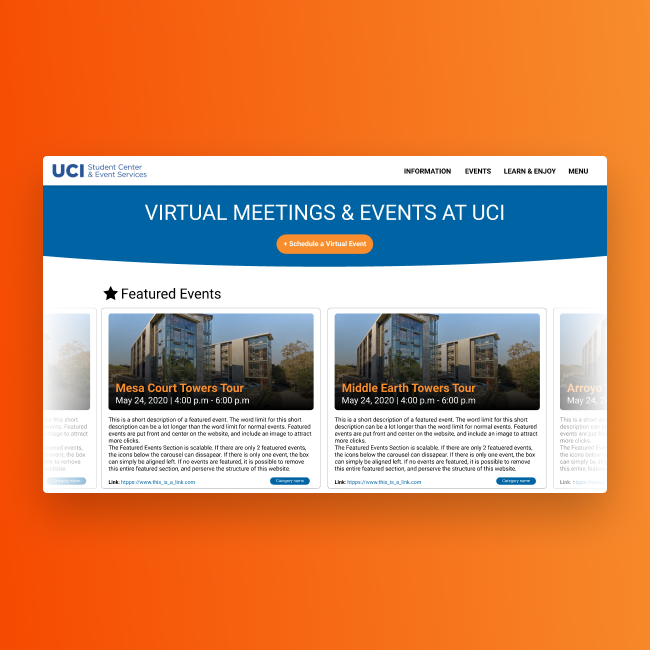

FEATURED WORKS

Hatched was designed for the Adobe x Amazon Design Creative Jam. Over 600 teams from the US, Canada, and UK competed to design an application. Our team’s application was awarded with an honorable mention and placed in the top 20.
read case study

Turnout Tracker is a mobile application that improves the process of tracking attendance for meetings and events. I was solely responsible for research and design for this project.
read case study

PeterPortal is a website developed by the ICS Student Council Projects Commitee at UCI. Working with other students, I designed the UI/UX and branding of the website with Figma. In addition, I assisted with front-end development in CSS/HTML.
read case study
Hatched
UX DESIGN / TABLET APPLICATIONHatched was designed for the Adobe x Amazon Design Creative Jam. Over 600 teams from the US, Canada, and UK competed to design an application. Our team’s application was awarded with an honorable mention and placed in the top 20.
read case study
Turnout Tracker
UX DESIGN / MOBILE APPLICATIONTurnout Tracker is a mobile application that improves the process of tracking attendance for meetings and events. I was solely responsible for research and design for this project.
read case study
PeterPortal
UX DESIGN / WEBSITEPeterPortal is a website developed by the ICS Student Council Projects Commitee at UCI. Working with other students, I designed the UI/UX and branding of the website with Figma. In addition, I assisted with front-end development in CSS/HTML.
read case study
OTHER WORKS

I was a graphic designer for the Information & Computer Science Student Council (ICSSC). I collaborated with other committees within ICSSC such as Public Relations and Events in order to create event and announcement graphics. I created them using Krita and Adobe Photoshop.
view graphics

At the Video Game Development Club at UCI (VGDC), students work in small groups to develop video games. I designed video game UI, main menus, and art assets. In addition, I utilized Unity, C#, and Github to produce these games.
view games

I was a graphic designer for the UCI Esports Digital Content Team. I worked alongside writers, videographers, and other graphic designers to promote UCI Esports. Using Krita, I created graphics for UCI Esports’s social media, announcements, and events.
view graphics

I performed a case study of the Virtual Meetings and Events at UCI website, and redesigned it using Figma. This was part of the Design Challenge competition hosted by ICSSC in collaboration with Design at UCI and the UCI Student Center IT Team.
read case study
Virtual Meetings and Events at UCI
UX DESIGN / WEBSITE REDESIGNI performed a case study of the Virtual Meetings and Events at UCI website, and redesigned it using Figma. This was part of the Design Challenge competition hosted by ICSSC in collaboration with Design at UCI and the UCI Student Center IT Team.
read case study
ICS Student Council
GRAPHIC DESIGNI was a graphic designer for the Information & Computer Science Student Council (ICSSC). I collaborated with other committees within ICSSC such as Public Relations and Events in order to create event and announcement graphics. I created them using Krita and Adobe Photoshop.
view graphics
Video Game Development Club at UCI
PROGRAMMING / GAME DESIGNAt the Video Game Development Club at UCI (VGDC), students work in small groups to develop video games. I designed video game UI, main menus, and art assets. In addition, I utilized Unity, C#, and Github to produce these games.
view games
UCI Esports
GRAPHIC DESIGNI was a graphic designer for the UCI Esports Digital Content Team. I worked alongside writers, videographers, and other graphic designers to promote UCI Esports. Using Krita, I created graphics for UCI Esports’s social media, announcements, and events.
view graphics